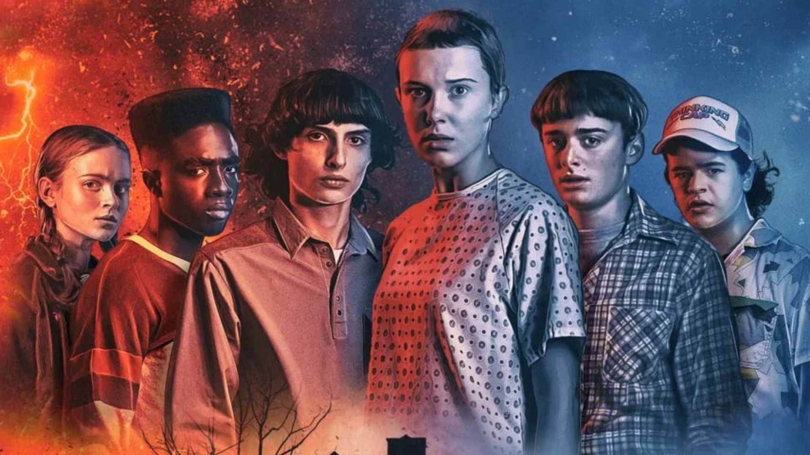

"Stranger Things" é uma série de ficção científica e suspense da Netflix, ambientada na década de 1980 em Hawkins, Indiana. Quando um jovem desaparece, seus amigos e familiares descobrem experimentos secretos do governo e um universo alternativo. Eles se unem para desvendar os mistérios de Hawkins e enfrentar ameaças sobrenaturais. A série é conhecida por suas referências à cultura pop dos anos 80 e seu elenco talentoso.